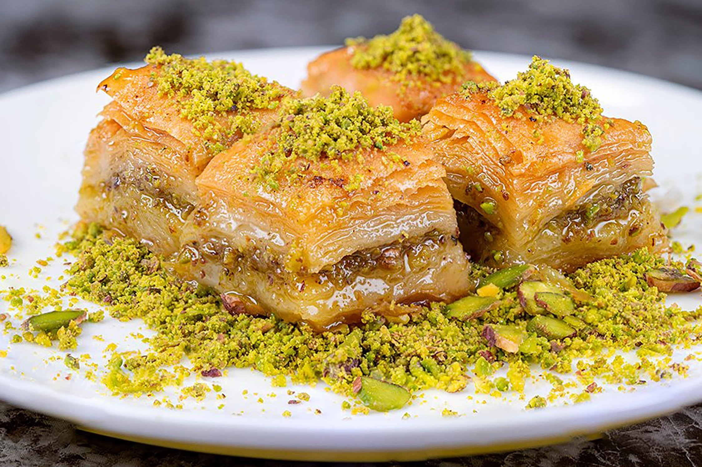

BAKLAVA

INGREDIENTS
- 1 pound phyllo dough
- 2 cups finely chopped walnuts
- 1 cup butter, melted
- 1 cup sugar
- 1 cup water
- 1/2 cup honey
- 1 lemon
- 1 cinnamon stick
INSTRUCTIONS
- Preheat the oven to 350°F (180°C).
- In a mixing bowl, combine the chopped walnuts with 1/4 cup of sugar and mix well.
- Brush a 9x13 inch baking pan with melted butter.
- Lay a sheet of phyllo dough in the bottom of the pan, brushing it with melted butter.
- Repeat this process until you have used half of the phyllo dough sheets.
- Spread the walnut mixture evenly over the top layer of phyllo dough.
- Cover the walnuts with the remaining phyllo dough, again brushing each sheet with melted butter.
- Using a sharp knife, cut the baklava into diamond shapes.
- Bake the baklava in the preheated oven for 30-40 minutes or until golden brown.
- While the baklava is baking, prepare the syrup by combining 3/4 cup of sugar, 1 cup of water, the juice of 1 lemon, and 1 cinnamon stick in a small saucepan.
- Bring the mixture to a boil and let it simmer for 10-15 minutes, stirring occasionally.
- Add 1/2 cup of honey to the syrup and stir to combine.
- Remove the baklava from the oven and pour the hot syrup over it, making sure it gets into all of the cuts.
- Let the baklava cool completely before serving.